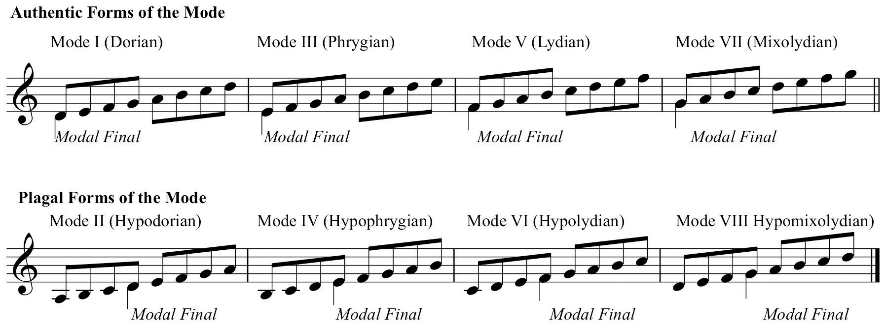
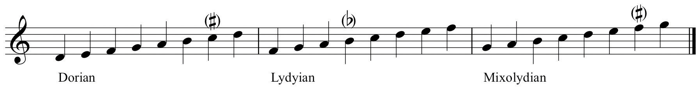
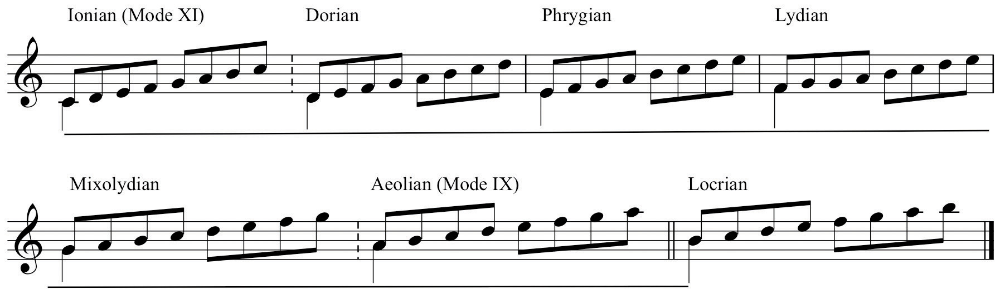
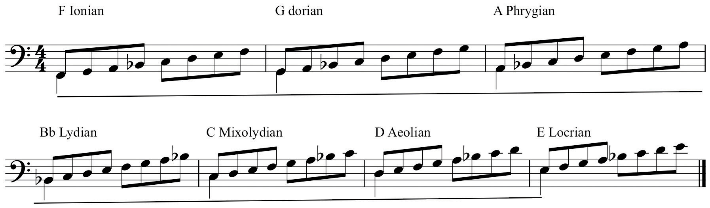

Pre-Tonal (pre-Common Practice) music is generally considered to be music prior to 1587 or16001600 is a convenient benchmark. 1587 is sometimes used as a more specific date. This coincides with the establishment of the Florentine Camerata, (or Camerata di Bardi after its patron), a colloquium of Northern Italian Humanists, Poets, Musicians, and aesthetes. In attempting to “rediscover” and recreate ancient Greek dramatic forms, they developed a new style of music, the “Second Practice,” or “New Style.” This was the origin of Opera.. This period is often referred to as the Modal Era (as opposed to the Tonal Era that is the Common Practice period).
The source materials for Tonal practice consist of the Major/Minor duality. Music of this period essentially relied upon Major and Minor scales and their extrapolated constructs as the formative resources for composition.
In the Modal Era, the source materials were a collection of scalar constructs called ModesHeptatonic scales used in early music. Also used in post-Tonal music.. Originating as tetrachords in early Greek theory, in early Western music they consisted of a collection of interlocking hexachords, each with specific attributes. In time, as compositional resources evolved, supported by accompanying theoretical principles, Modes became a series of heptatonic scales, each with very specific attributes.
Although these were the theoretical basis for early music, modes languished during the Tonal Era. Composers in the 20th-Century, looking for alternative resources to Major and Minor scales, “re-discovered” modes. Modal “flavors” are found in abundance throughout examples of music since 1900.
Modes have become an integral resource in the Jazz style as well. Since the mid-to-late 1950’s, modes are considered to be the initial, or primary source scales for Jazz improvisation, especially in the pedagogical practice called chord/scale equivalency.Most Jazz scholars identify the seminal recordings of Miles Davis in the late 1950’s as heralding the advent of modal use in Jazz. There is evidence that trumpet player Don Cherry may have used modal resources earlier in the decade.
The Ecclesiastical Modes (or “Church” Modes) were seven-tone scales built upon D, E, F, and G. Each was ordered as an octave species from the modal finalThe modal equivalent of Tonic or keynote. (modal “tonic”). Each also had a re-ordered version wherein the top tetrachord of each was placed below the modal final (Latin: finalis). The original ordering was called the AuthenticThe original ordering of a mode as an octave species from the final. form of the mode, the transposed version was called the PlagalA re-ordering of the mode wherein the top tetrachord is placed below the final. form.
These alternate Plagal orderings were not new modes: each pair, Authentic and Plagal, had the same final. A particular form was so labeled based upon the range of the modal melody as well as upon the perceived modal dominant within each form.
Originally, modes had specific names. These names reflect regional or place names from the Hellenistic world but were really stylistic indicators. In early church music modes were numbered sequentially. Eventually, the early names were re-used reflecting their early origins. We label modes using these names.
Figure 3.16 Ecclesiatical Modes
In and of themselves, the theoretical modes were considered to have certain flaws in regard to their use in practical composition. These perceived flaws were treated by the use of musia ficta: composers routinely altered pitches to achieve the desired result. For example, the “softening” of the fourth scale degree in Lydian, or adding a Leading Tone to Dorian and Mixolydian.Because of its unique character, Phrygian was resistant to any alteration.
Figure 3.17 Modes and music ficta
In practical composition, the altered version of the mode became the version used. The resulting mixtures of mode and alteration in time yielded new scales, recognized as such by established practice. This was codified in the Greater Modal System.
Figure 3.18 The Greater Modal System (Abbreviated)
Note that Ionian is the Major scale and Aeolian is the Natural Minor scale. The other earlier modes (again by established practice) gradually polarized toward one or the other of these two forms. Due to the perceived flaws of each mode, they eroded under the weight of their own inefficiency and distilled into either the “Major” mode, or the “Minor” mode. The Locrian mode, while recognized as a theoretical mode was not used in practical composition due to its unstable final resolution.Locrian was not included in the system of modes until 1482 where it was described in the treatise de Musica of the Spanish composer and theoretician Bartolomé Ramos de Pareja.
This sense of polarization toward either Major or Minor becomes one useful technique for learning modes and familiarization with their characteristics. The Associative MethodRecognition of modes by association with either the Major or the Minor scale and observing the variances from these. classifies modes as having the same basic characteristics as either Major or Minor and then recognizes the variances.
| Major Sounding Modes | Minor Sounding Modes |
|---|---|
| Ionian: Major | Aeolian: Natural Minor |
| Lydian: Major, raised 4 | Dorian: Minor, raised 6 |
| Mixolydian: Major, lowered 7 | Phrygian: Minor, lowered 2 |
|
Locrian: Minor, lowered 2 & 5 (or Locrian: Phrygian, lowered 5) |
Figure 3.19 The Associative Method for Modes

This method is extremely useful in many instances, especially for recognition purposes and as a tool for learning to hear and sing modes.Some advocate a similar system wherein the student is compelled to memorize modes as variances from the major scale. We reject this as being unwieldy and narrow. As such, it cannot be recommended. Modes are labeled by the letter name they begin upon followed by the mode name.
Figure 3.20 Sample Modes and Labels

A second method is more complete and serves well for the identification of modes, as well as the construction and transposition of modes to other pitches. Observe Figure 3.21 "The Revolving Scale Method for Modes". This diagram of the abbreviated Greater Modal System is projected as a revolving major scale. In other words, it appears to be a C major scale constructed upon successively higher scale degrees. In this Revolving Scale MethodRecognition of modes by their consistent order in the context of the Revolving Major Scale., each successive reordering of the scale corresponds to one of the modes.
Figure 3.21 The Revolving Scale Method for Modes

This modal ordering remains constant regardless of the major scale used. Therefore, it can be used as an “algorithm,” a known value for comparative problem solving, and used as a tool for identifying, constructing, and transposing modes. In Chapter 4 "Key Sense, Key Signatures, and The Cycle of Fifths" modes will be revisited and the Revolving Scale model will be used in conjunction with other tools to perform these tasks.
Figure 3.22 Revolving Model from F
The student should:
In your Scale Thesaurus:
In your Scale Thesaurus, using the Associative Method, construct the following modes: